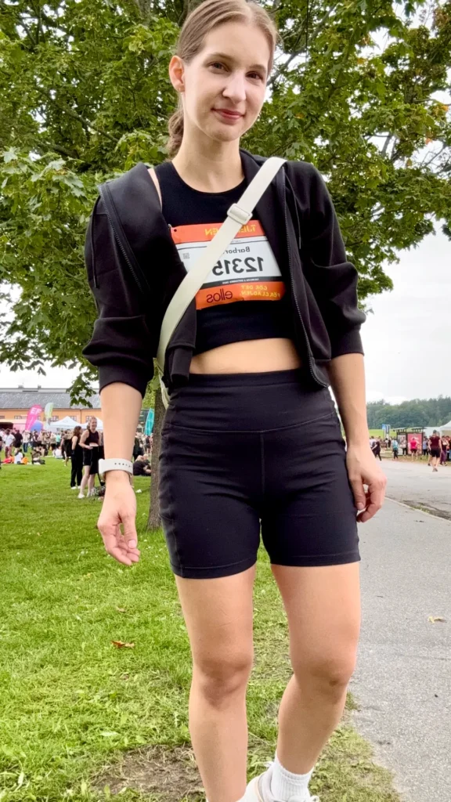
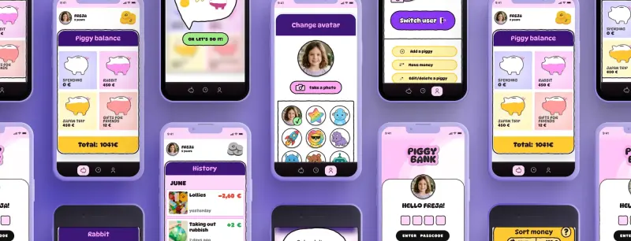
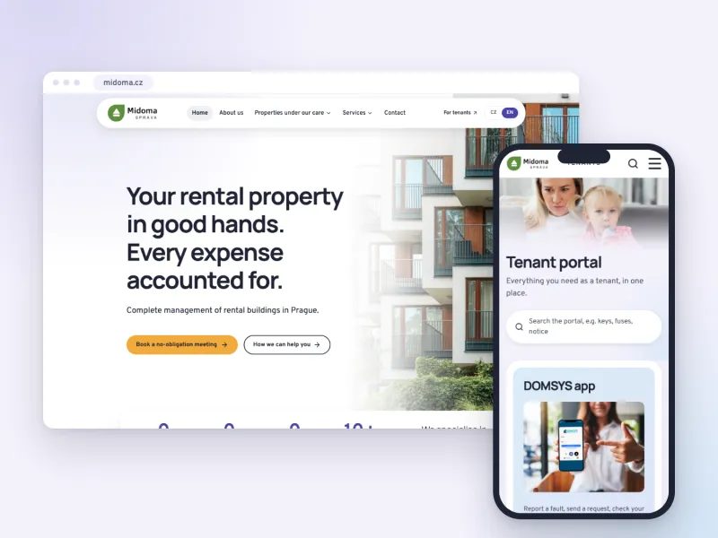
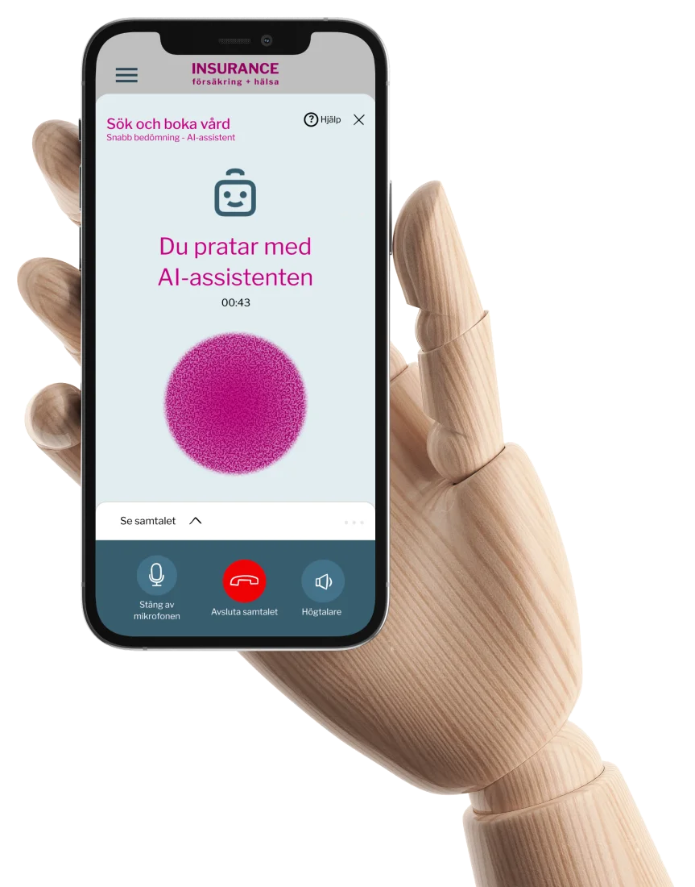
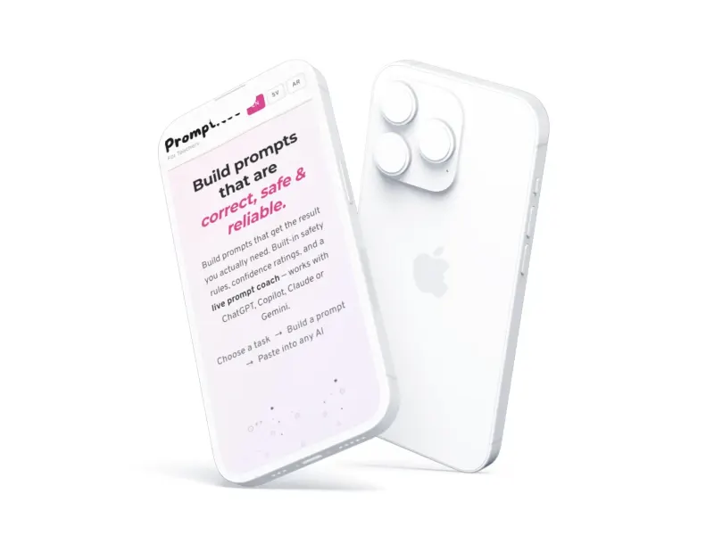
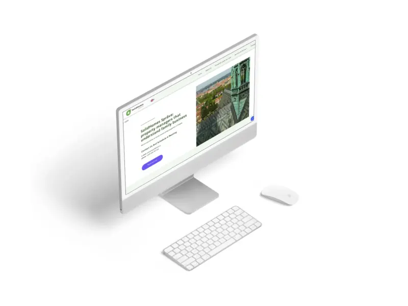
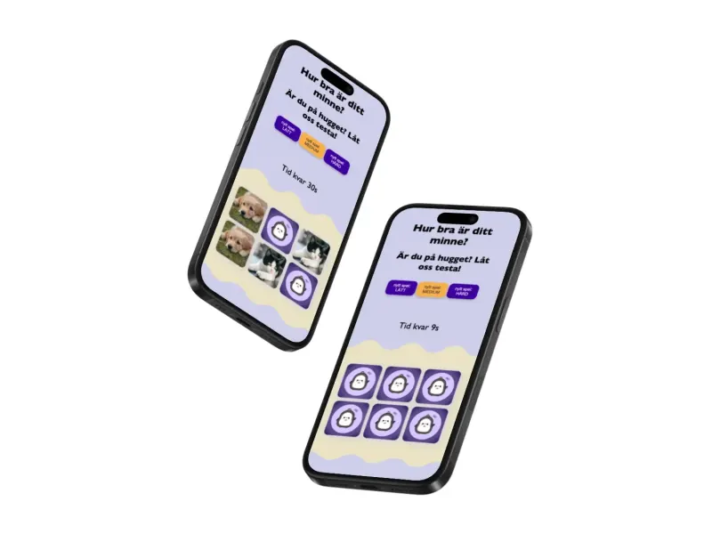

Jag förstår användarnas behov
För att utveckla idéer i rätt riktning baserar jag mina beslut på insamlad data, helst från primär research. Jag har gjort både formella och informella intervjuer och är van vid att föra strukturerade anteckningar.
Jag heter Barbora och är UX- och produktdesigner i Uppsala och Stockholm.
För att utveckla idéer i rätt riktning baserar jag mina beslut på insamlad data, helst från primär research. Jag har gjort både formella och informella intervjuer och är van vid att föra strukturerade anteckningar.
Jag har utvecklat ett eget designsystem åt en kund, för att ge ett enhetligt uttryck på deras två webbplattformar och kunna växa i framtiden.
Jag bygger prototyper både i Figma och i kod med hjälp av AI. De testas, resultaten antecknas och designen anpassas efter dem.
Tre år som frilans inom UX/UI, WordPress och strategi, för fastighetsförvaltning, personlig coachning och småföretag.
Ja. Webbutveckling och användarupplevelse (Webmasterprogrammet) på Högskolan Väst. Innan dess studerade jag fysioterapi vid Uppsala universitet.
Jag är van vid att intervjua målgruppen för att få fram de data som behövs för att utveckla den bästa möjliga lösningen för mina användare. Till exempel har jag gjort spontana intervjuer i lekparken för min app Plink, och intervjuat intressenter för att förstå vad uppdraget innebär.
Jag har etablerade arbetsflöden som fungerar, samtidigt som jag håller mig uppdaterad och testar nya sätt att arbeta. Jag brukar skriva en grundlig PRD i Claude, som jag kombinerar med designfiler som jag gör i Figma. Därifrån skriver jag tillsammans med Claude instruktioner till Claude Code. Jag jobbar även med Lovable, Figma Make med flera.
Olika AI-modeller passar olika typer av arbete: Claude för idégenerering och brainstorming, Claude Code för prototyp- och produktutveckling, och Gemini och ChatGPT för bildgenerering. Vilket jag väljer beror på projektet, budgeten och hur mycket tid det finns.
Nu har jag också börjat med syntetisk användartestning av prototyper innan jag testar med riktiga användare. Det hjälper mig att fånga oväntade edge cases.

Jag är UX- och produktdesigner från Uppsala som också kodar, och jag tog examen från Webmasterprogrammet på Högskolan Väst i augusti. Efter flera år som ensam frilansare vill jag nu arbeta i ett produktteam.
Jag kan inte sitta stilla, vilket gör att jag ständigt utvecklar mig som designer och utvecklare. I somras gjorde jag en UX-case study, Plink, som jag nu har byggt och som snart publiceras på App Store. Research, design och kod gjorde jag själv med hjälp av Claude Code.
Jag lyssnar först och frågar mycket. Jag nöjer mig sällan med det första svaret, varken från en användare eller från en AI.
Designsystem har jag byggt från grunden för min kund Midomas två webbplatser, och Plink, pengappen för barn, har egna tokens och en stilguide som koden följer. Därför vet jag hur mycket jobb som ligger bakom ett system som FORMA, och jag skulle gärna vara med och utveckla det vidare.
Jag trivs i team där man kan diskutera saker och stödja och hjälpa varandra med olika expertis och erfarenhet. Jag är skeptisk av naturen och vill se en lösning fungera innan jag litar på den. Jag deltar regelbundet i hackathons för att arbeta med människor som tänker annorlunda, och jag lär mig minst lika mycket som jag bidrar med. Svenska och engelska talar och skriver jag flytande.
Jag visar gärna hur jag arbetar.

Ett UX-case om att lära barn från fyra år att spara, som nu har blivit en riktig app.
Läs caset (öppnas i en ny flik)
Redesign och ett designsystem som växer med företaget, över två webbplatser.
Läs caset (öppnas i en ny flik)
En idé till en funktion i Euro Accidents app, ett inofficiellt koncept.
Läs caset (öppnas i en ny flik)
Hjälper lärare att faktiskt använda de AI-verktyg de redan har.
Läs caset (öppnas i en ny flik)
Bygger förtroende för ett familjeägt fastighetsbolag utan närvaro på nätet.
Läs caset (öppnas i en ny flik)
Hur ser bra UX ut när användaren är fyra år och håller på att tappa tålamodet?
Läs caset (öppnas i en ny flik)